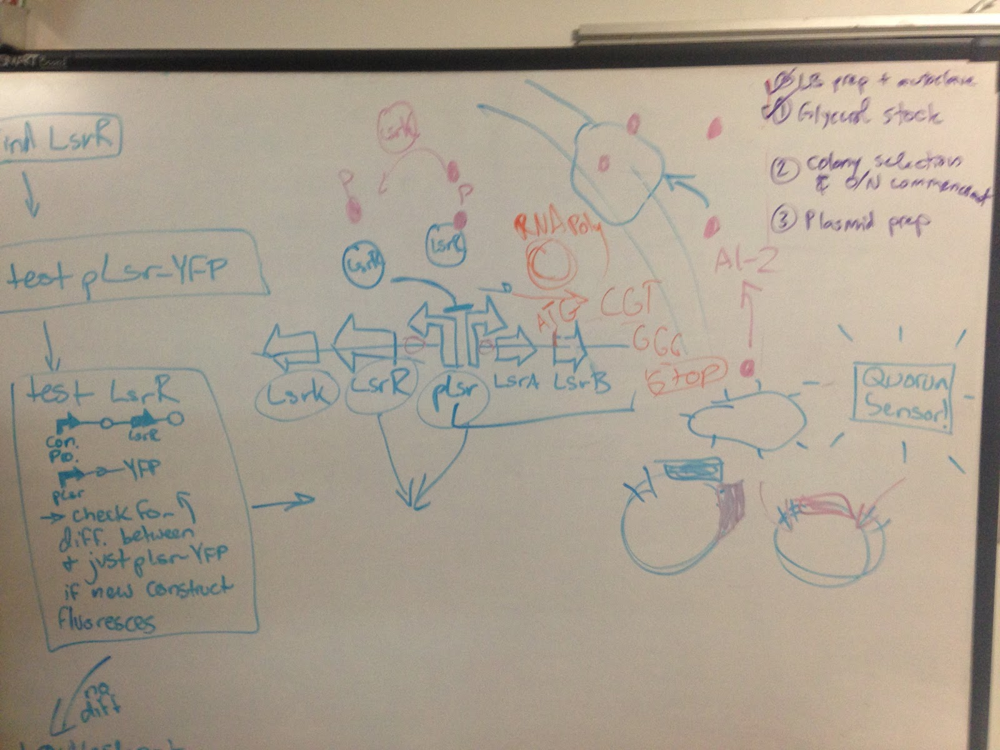
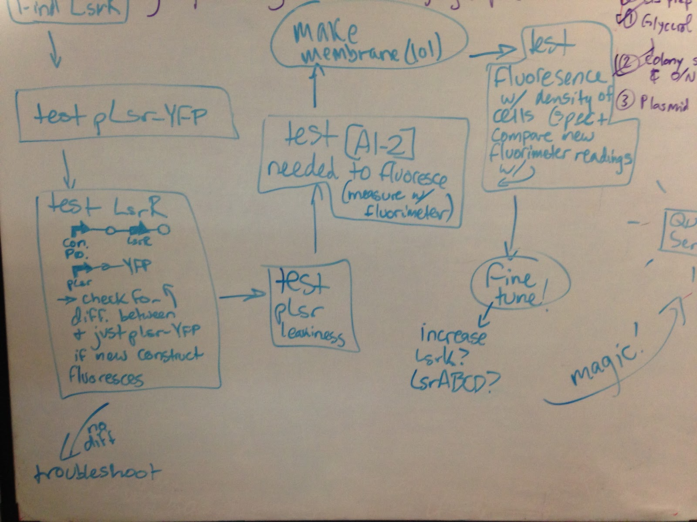
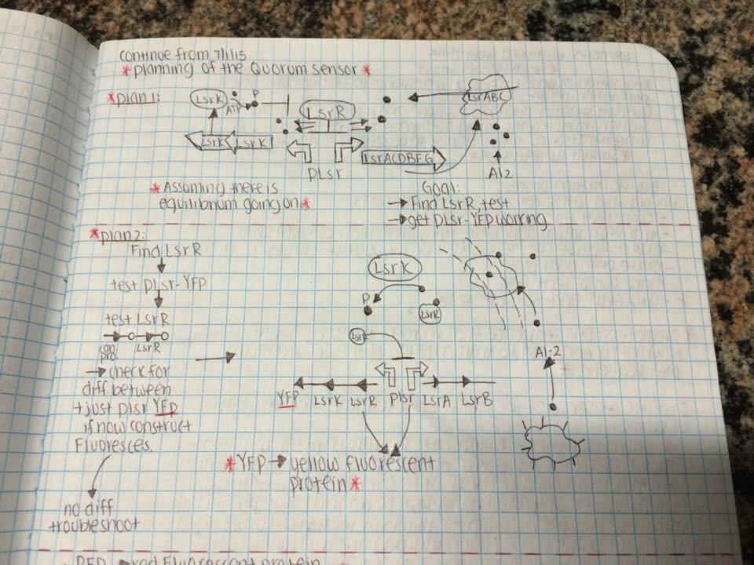
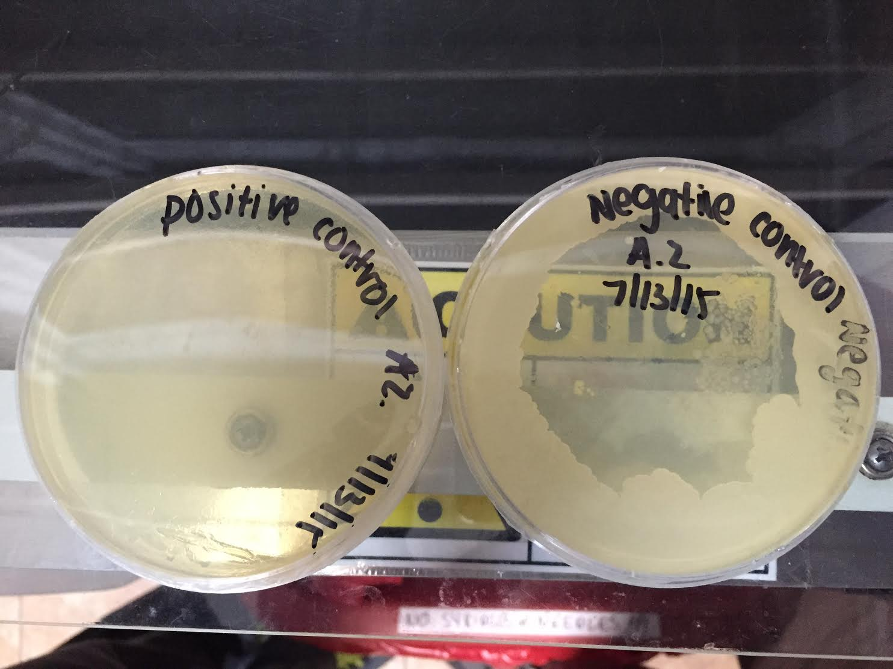
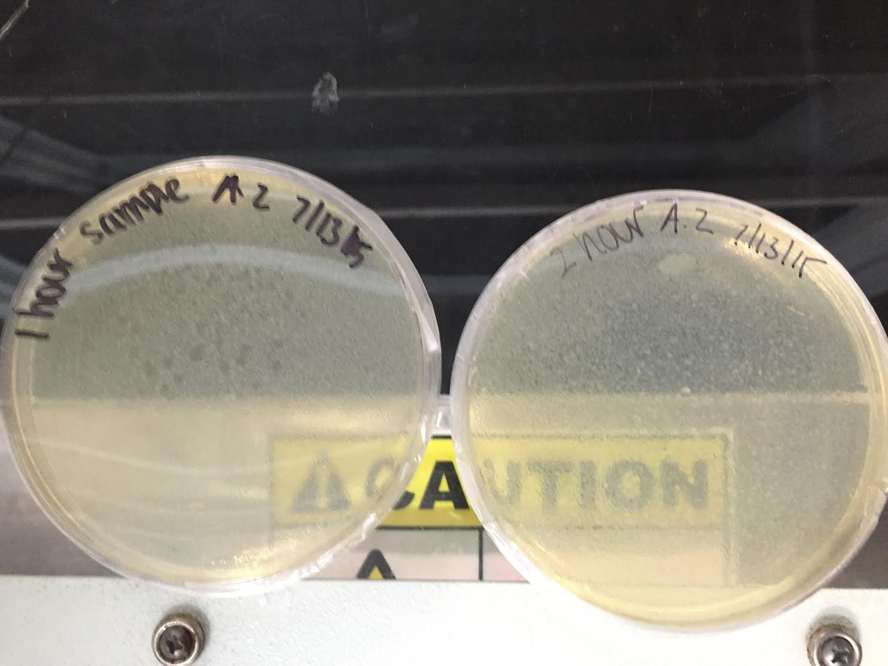
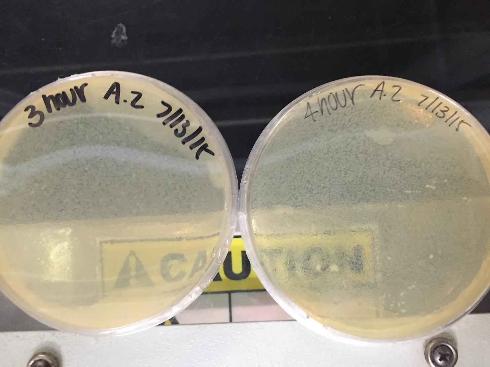
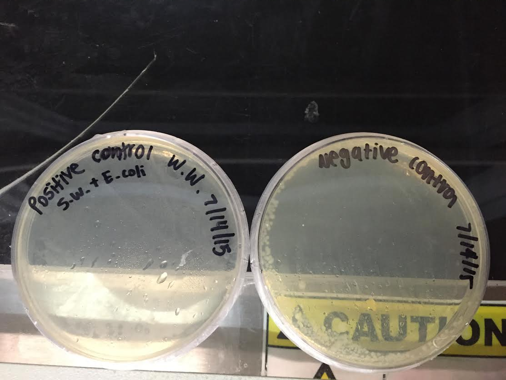
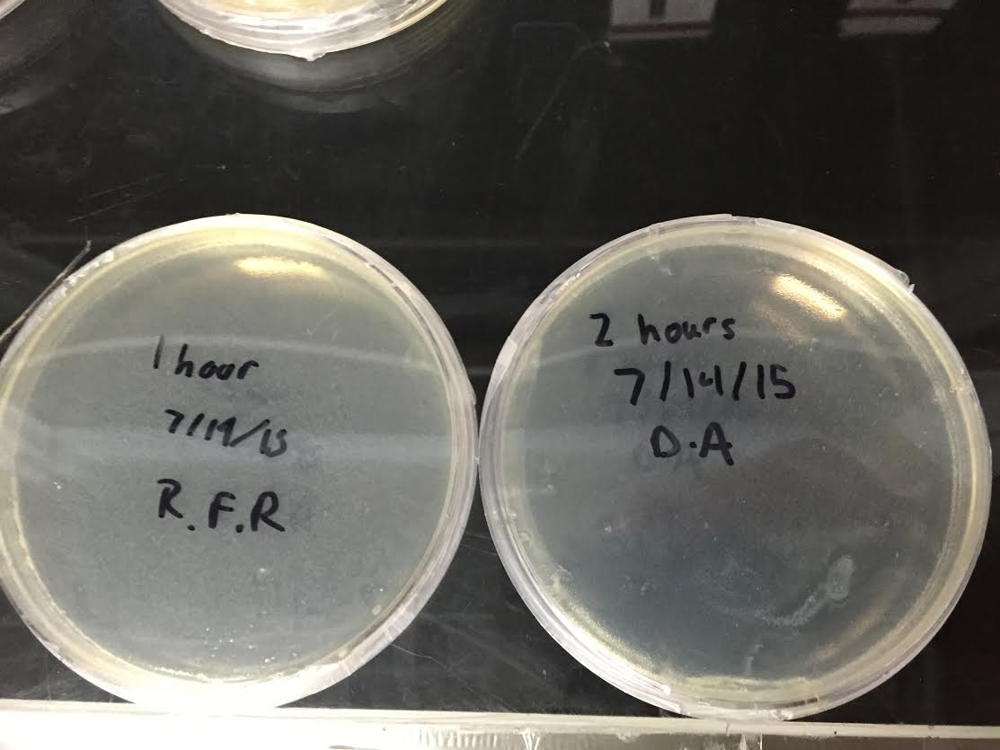
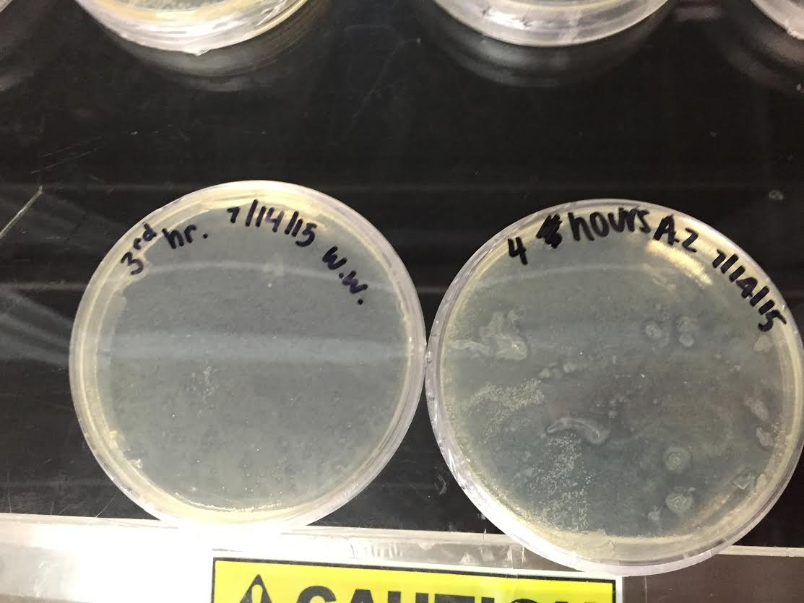
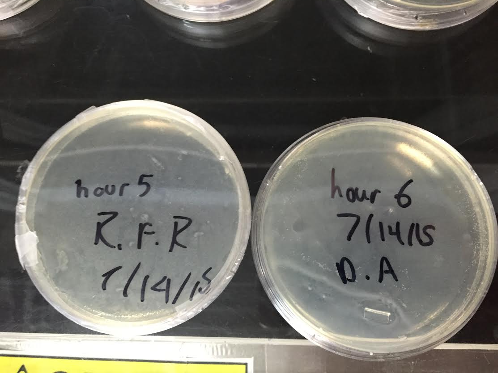

Week 1: June 30 - July 2
Tuesday (6/30/2015)
Objective: Safety Training
Purpose: Our safety
Summary: Today was entirely dedicated to researching, splitting the team in two to make the most efficient use of our time. The adults and undergraduates focused on quorum sensing. The high school students looked through different promoters that activated in the presence of molecules common to human sewage.
Changes in chemicals after human waste in sewage water (mg/l)
- Bicarbonate (HCO3) 50-100
- Chloride (Cl) 20-50
- Nitrate (NO3) 20-40
- Phosphate (PO4) 5-15
- Sulfate (SO4) 15-30
Wednesday (7/1/2015)
Objective: 60% Glycerol stock
Purpose: Student training
Summary: We have finally done stuff! Student team members continued their initial safety training, as well as learning how to do basic techniques (e.g. 60% Glycerol stock). Meanwhile, our senior team members came up with a more detailed plan than just "biosensor". Miranda came up with multiple plans for the system. By modifying Lsr Operons, we hope to use Quorum sensing to detect the presence of E.coli bacteria other than those that we use. -80 Competent cells
- 1.5 ml of culture into fresh 2.0 ml cryo tubes
- Add 0.5 ml of 60% Glycerol
- Vortex to mix
- Flash freeze in Liquid Nitrogen
- Transfer cryo tubes to long-term storage in -80^C freezer
The purpose of this was teaching the kids how to make competent cells YAAAAY
We also spent the day researching various E. coli quorum sensing pathways. Many bacterial species, such as E. coli, use quorum sensing to regulate gene expression in response to changes in local population size. We stumbled upon the AI-2 pathway, which is shared by gram negative and gram positive bacteria. The system is based on an Lsr regulon, and is comprised of multiple interacting parts, including a promoter, LsrR, LsrK, and LsrACDB.
LsrA, C, D, and B encode subunits of a transmembrane transport protein that brings AI-2 into the cell, where it is phosorphorylated by LsrK. Phospho-AI-2 binds to LsrR, the repressor for the Lsr promoter, allowing transcription of the regulon.
We hope to couple the Lsr regulon with a downstream fluorescent gene to create a quorum sensing-based “biosensor,” that fluoresces in high concentrations of E. coli. In doing so, we provide the Gowanas community with an instantaneous means of evaluating the canal’s potentially dangerous contents.
In order to prevent the biosensor from self-inducing, we must knock out luxS, the gene that produces AI-2.
This is a diagram of the E. coli AI-2 quorum sensing pathway (above). It was drawn by some of the team members who had been researching quorum sensing, in order to explain the results of this research to the rest of the team.
This is a flowchart of our preliminary plan.
A better diagram of the Lsr pathway
Thursday (7/2/2015)
Objective: Waking parts from the registry
Purpose: iGem Parts
- Puncture the foil covering with a clean pipette tip.
- Using a fresh tip, pipette 10μL from a fresh aliquot of Molecular Biology Grade Water into wells 18I (K117002) and 18K (K117008), then pipette up and down to mix. The DNA contains a red dye, so the water should turn red as you mix.
- Record the well you opened up and continue by transforming the DNA.
Summary: The "Quorum Sensing" group looked up two parts we need for the sensing project (Lsr Promoter: pLsrA {BBa_K117002} pLsrA-YFP {BBa_K117008}), and decided to teach the students how to take DNA out of the registry.

In pursuing further quorum sensing research, we came across the Lux operon. Like Lsr, the Lux system is important in bacterial quorum sensing. The operon consists of a Lux promoter and its regulator, LuxR. The system is controlled by the signal AHL (N-Acyl homoserine lactone), emitted by the gram negative bacterial species V. fischeri. After diffusing through the cell membrane, two molecules of AHL bind with two molecules of LuxR protein. The complex then binds to the promoter, upregulating transcription of downstream genes.
We plan to ligate the LuxR operon with a fluorescent protein gene. If the circuit works properly, the bacteria will fluoresce when surrounding bacterial population sizes increase.
Week 2: July 6 - July 10
Monday (7/6/2015)
Objective: 3A assembly
Purpose: Student training
- In order, place following into PCR tube:
- 33 ul water
- 5 ul 10x NE (New England) Buffer 2.1
- 1 ul Enzyme #1
- 1 ul Enzyme #2
- DNA- 500 ng (10 ul) part or 500 ng (3 ul) DNA backbone
- Incubate at 37^C for 10 min.
- Heat inactivate at 80^C for 20 min.
- Hold at 4^C
We bought a container of Top Fin Liquid Saltwater Concentrate to test how E.coli withstand various salt concentrations.
Tuesday (7/7/2015)
Objective: Plasmid Prep
Purpose: Student training
- Place TE buffer into incubator at 37^C
- Centrifuge 1.5 ml of the overnight LB culture for 30 seconds
- Add 250 ul Resuspension Buffer (R3) with RNase to cell pellet by pipetting up and down
- Add 250 ul Lysis Buffer (L7). Mix gently by inverting 5x. Incubate at room temp. for exactly 5 min.
- Add 350 ul Precipitation Buffer (N4). Invert 5x. Place in centrifuge at 11,000 RPM for 10 min.
- Load supernatant into 2 ml wash tube with spin column. Place in centrifuge for 1 min.
- Add 500 ul wash buffer (w10) with ethanol. Incubate at room temp. for 1 min. Centrifuge for 1 min.
- Add 700 ul wash buffer (wq). Centrifuge for 1 min.
- Place spin column in a clean 1.5 ml recovery tube. Add 75 ul of TE to center, incubate for 1 min. at room temp.
Plates have been streaked with E.coli K12 in preparation for the salt concentration experiment.
Wednesday (7/8/2015)
Objective: Pouring Electrophoresis gels
Purpose: Student training
Summary: LB plates were made by students as a review of our knowledge, using three antibiotics: Ampicillin. Chloramphenicol, and Kanamycin.
- 0.35 g agarose (0.7%)
- 50ml TAE water
- Foil over flask and poke holes
- Microwave: Power level 70%; 4 min.; stop when boils
- Once lukewarm, 5 ul Phenix dye (10,000 in water)
Plates have been streaked with E.coli K12 in preparation for the salt concentration experiment.
Thursday (7/9/2015)
Objective: Genomikon kit, Design saline experiment
Purpose: Progress
NOTICE: We are assuming that the LSC (Liquid Salt Concentration) has a salinity of 31.5% because of its claim of mimicking saltwater conditions in a 9x dilution. Saltwater usually as a salinity of 3.5%
- Set Seawater concentration
- Set E.coli concentration
- Samples at timepoints
Math behind dilution concentrations
Big picture experiment design
Genomikon: Iron bead binds to DNA Anchor connected to the bead - Sticky ends X,X’; Z,Z’ - Cap with amp resistance - Sodium Hydroxide disconnects the iron bead to the gene - DNA will circularize
Friday (7/10/2015)
Purpose: Can long can E. coli survive in seawater, and if so for how long?
Idea:Using +/- controls and 3.5 concentration of salt water. Focus on time and how we can kill of all GM bacteria quickly. Discussed other bacteria that we could detect in the sewage that may flow from canal to ocean.
Protocol for the Minimal Media Recipe
Under the Sea
- Set E. coli concentration (1:100 dilution of O/N)
- Set salt concentration
- Different times
Plate
- Individual Colonies
- No time restrictions
Brooth
- Shaker mimics sea/ocean
- Spectrophotometer
- Time restrictions
Week 3: July 13 - July 17
Monday (07/13/15)
Purpose:Purpose of Protocol is to mimic the environment of the ocean and observe when E. coli would not grow anymore. Adjustments were made to the protocol to make the experiment more accurate; the volume of the total solution of saltwater and E. coli will be increased so there would be less evaporation of water.
"Under the Sea" Experiment
Materials:
- 8 Agar Plates (No antibiotics)
- 100 microliters of E.coli (O/N)
- 9900 microliters of Salt water
- Positive control -0'0" salt + E.coli
- Negative control - 0'0" salt
Procedure:
- Make a 1:100 dilution of stationary phase E.coli in 9.9 ml of saltwater
- Pour 9,900 microliters of saltwater into 500 ml flask
- Take 1 mL, put in spectrophotometer, plate as control
- Put 100 Microliters of E.coli into flask, mix, put in spec, plate as +control
- Place flask on shaking platform, turn to 5 (level)
- Check every hour by taking 1 ml of Solution into spec, plate 1 ml
- Finish at 6 PM, last culture at 1 PM the next day
- O/N plates, look at results
Adjustments made.
Tuesday (07/14/15)
Objective: New Salinity Test
Purpose: Reliable Results
Summary: Yesterday’s test did not go well. When we came in this morning, we found bacteria in the negative control, and a huge margin of error in the
New protocol: (1:10) dilution with salt water and E. coli where 4 mL of bacteria was used with 36 mL of salt water concentration. A new overnight was made with approx. 13mL.
Results of Salinity Test #1
  Lsr Team Transformations
Identified potentially useful part (S03968) and transformed into E. coli Top 10.
- Rehydrate part using 10μL of molecular biology grade water.
- Part was located in 2012 plate 3 well 8D
- Thawed competent cells on ice
- Pipette 2μL of resuspended DNA onto cells. Incubate on ice for 30 minutes.
- Heat shock for 1 minute
- Incubate on ice for 5 minutes
- Add 200μL LB without antibiotic. Incubate in shaker at 37°C for 30min.
- Plate cells on LB agar containing ampicillin
- Two plates were prepared for S03968; one using 20μL and one using 200μL of transformed cells.
- 200μL
Wednesday (07/15/15)
Objective: New Salinity Test
Purpose: Reliable Results
Test: Once again the negative control has grown bacteria in it, leading us to believe that our water supply is contaminated. We have plated a sample directly from an aliquot of the saltwater, and if it turns out positive then we will know why the experiment has been contaminated. We now know to autoclave all saltwater supplies in the future.
Results of Salinity Test #2
   Lsr Team: Plates prepared on 14-Jul-2015 from E. coli Top 10 transformed with S03968 grew a significant number of colonies. A single colony was isolated and transferred into ~5mL of LB containing ampicillin and cultures overnight at 37°C in a rotator.